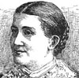
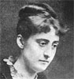

Collective Biographies of WomenAn Annotated Bibliography
Alison Booth
99.
Bolton, Sarah Knowles. Successful Women. Boston: Lothrop, 1888.
See How To Make It as a Woman, 57.
Search OCLC WorldCat for this title.
Search Google Books for this title.
Bolton, Sarah Knowles. Successful Women. Boston: Lothrop, 1888.
See How To Make It as a Woman, 57.
TOC: Juliet Corson; Mary Louise Booth; Frances E. Willard; Mrs. G. R. Alden ("Pansy"); Mary Virginia Terhune ("Marion Harland"); Margaret; Ella Grant Campbell; Rachel Littler Bodley (by a friend); Candice Wheeler; Clara Barton; Alice E. Freeman (by a friend). *Pop Chart.
-
 Alice E. Freeman
Alice E. Freeman -
Juliet Corson
-
Mary L. Booth
-
Frances E. Williard
-
Mrs. G. R. Alden (“Pansy”)
-
Mary Virginia Terhune (“Marion Harland”)
-
The Statue to “Margaret of New Orleans”
-
Margaret
-
Ella Grant Campbell
-
Dr. Rachel Littler Bodley
-
 Mrs. Candace Wheeler
Mrs. Candace Wheeler -
Miss Dora Wheeler
-
Clara Barton
Search OCLC WorldCat for this title.
Search Google Books for this title.